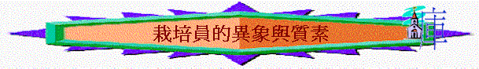

1.作栽培員異象
A.父神的心腸
「耶和華的話臨到我說：」結34:1
「因無牧人，羊就分散；既分散，便作了一切野獸的食物。我的羊在諸山間、在各高岡上流離，在全地上分散，無人去尋，無人去找。」結34:5-6
a.羊群流離
b.無牧尋回
B.基督的托負
「十一個門徒往加利利去，到了耶穌約定的山上。他們見了耶穌就拜他，然而還有人疑惑。耶穌進前來，對他們說：「天上地下所有的權柄都賜給我了。所以，你們要去，使萬民作我的門徒，奉父、子、聖靈的名給他們施洗（或作：給他們施洗，歸於父、子、聖靈的名）。凡我所吩咐你們的，都教訓他們遵守，我就常與你們同在，直到世界的末了。」」太28:16-20
a.栽培與大使命並列
b.栽培與有效佈道法
C.愛主的表現
「他們吃完了早飯，耶穌對西門彼得說：「約翰（在馬太十六章十七節稱約拿）的兒子西門，你愛我比這些更深嗎？」彼得說：「主啊，是的，你知道我愛你。」耶穌對他說：「你餵養我的小羊。」耶穌第二次又對他說：「約翰的兒子西門，你愛我嗎？」彼得說：「主啊，是的，你知道我愛你。」耶穌說：「你牧養我的羊。」第三次對他說：「約翰的兒子西門，你愛我嗎？」彼得因為耶穌第三次對他說「你愛我嗎」，就憂愁，對耶穌說：「主啊，你是無所不知的；你知道我愛你。」耶穌說：「你餵養我的羊。」」約22:15-17
2.作栽培員的質素
A.其方法----照神心意
「務要牧養在你們中間神的群羊，按著神旨意照管他們；不是出於勉強，乃是出於甘心；也不是因為貪財，乃是出於樂意；」彼前5:2
a.照父神的意思
〜不是按自己的意思、智慧、方法栽培小羊，是按神的意思
b.用純正的真道
「但你所講的總要合乎那純正的道理。」多2:1
〜神的意思已寫在神的話中，我們不是用世間的道理，似是而非的學問教導小羊，是要用純正的真道
c.常有主的吩咐
「凡我所吩咐你們的，都教訓他們遵守，我就常與你們同在，直到世界的末了。」太28:20
〜栽培員有責任將主的吩咐，神的旨意，真道培育小羊，但他必須對真理有所認識，知主的吩咐是甚麼，不是局部的真理，是「凡」全面的真理。
B.其態度----甘心樂意
「務要牧養在你們中間神的群羊，按著神旨意照管他們；不是出於勉強，乃是出於甘心；也不是因為貪財，乃是出於樂意。」彼前5:2
〜是「甘心」「樂意」的，不是勉強，而是很歡喜牧養神所交托的羊。
C.其目的----純全無私
「盜賊來，無非要偷竊，殺害，毀壞；我來了，是要叫羊（或作：人）得生命，並且得的更豐盛。」約10:10
〜不是為自己利益，為得一些名聲，成就感或好處，也不是為貪財，而是忠心完成神所託付的。
D.其生命----美好榜樣
「也不是轄制所託付你們的，乃是作群羊的榜樣。」彼前5:3
a.凡事謹慎
「聖靈立你們作全群的監督，你們就當為自己謹慎，也為全群謹慎，牧養神的教會，就是他用自己血所買來的（或作：救贖的）。」徒20:28
「我們若果顛狂，是為神；若果謹守，是為你們。」林後5:13
「無論是吃肉，是喝酒，是什麼別的事，叫弟兄跌倒，一概不做才好。」羅14:21
b.能說能行
「你既是教導別人，還不教導自己嗎？你講說人不可偷竊，自己還偷竊嗎？你說人不可姦淫，自己還姦淫嗎？你厭惡偶像，自己還偷竊廟中之物嗎？你指著律法誇口，自己倒犯律法，玷辱神麼？」羅2:21-23
c.不輕看己
「不可叫人小看你年輕，總要在言語、行為、愛心、信心、清潔上，都作信徒的榜樣。」提前4:12
d.內外流露
(1)外在的表現
〜言語、行為
(2)內在的馨香
〜愛心、信心、清潔
e.凡事謙卑
「他們必在那將要審判活人死人的主面前交賬。為此，就是死人也曾有福音傳給他們，要叫他們的肉體按著人受審判，他們的靈性卻靠神活著。」彼前4:5-6
「他們來了，保羅就說：「你們知道，自從我到亞西亞的日子以來，在你們中間始終為人如何，服事主，凡事謙卑，眼中流淚，又因猶太人的謀害，經歷試煉。你們也知道，凡與你們有益的，我沒有一樣避諱不說的，或在眾人面前，或在各人家裡，我都教導你們。」徒20:18-19
「我栽種了，亞波羅澆灌了，惟有神叫他生長。可見栽種的，算不得什麼，澆灌的，也算不得什麼；只在那叫他生長的神。栽種的和澆灌的，都是一樣，但將來各人要照自己的工夫得自己的賞賜。」林前3:6-8
E.其關係
a.互動的關係
「我是好牧人；我認識我的羊，我的羊也認識我，」約10:14
我認識我的羊而羊也認識我
b.愛的關係
「我是好牧人；好牧人為羊捨命。若是雇工，不是牧人，羊也不是他自己的，他看見狼來，就撇下羊逃走；狼抓住羊，趕散了羊群。雇工逃走，因他是雇工，並不顧念羊。」約10:11-13
a.顧念小羊
b.為主付出